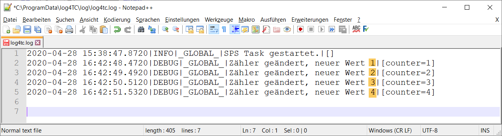

Ausgabe von Log-Meldungen mit Argumenten
Log4TC erlaubt es nicht nur konstante Log-Message auszugeben, sondern auch Argumente mitzugeben. Die Argumente stehen dann für den Text zur Formattierung zur Verfügung.
Log4TC stellt Funktionen für 0 bis 10 Argumente zur Verfügung.
Ausgabe von Argumenten mit ANY-Typ
Argumente werden mit dem ST-Datentyp ANY übergeben werden. Einzige Voraussetzung dafür ist, dass der Wert als Variable vorliegt. Es können daher keine Literale (z.B. 42) und keine Ausdrücke (z.B. nVar * 10) verwendet werden. Dies ist eine Einschränkung des ANY-Typs.
Im Beispiel wird ein Zähler erzeugt, der jede Sekunde um eins hochzählt:
VAR
nCounter : UINT;
fbCountTime : TON := (PT:=T#1S);
END_VAR
----------------------------------------------------------------------
fbCountTime(IN:=NOT fbCountTime.Q);
IF fbCountTime.Q THEN
nCounter := nCounter + 1;
// Hier Zähler ausgeben
END_IF
Als Nächstes wird bei jeder Änderung des Zählers eine Meldung in das Log-File geschrieben. Dazu wird der Logger im IF/THEN eingefügt und der aktuellen Zählerwert übergeben:
F_LogA1(E_LogLevel.eDebug, 'Zähler geändert, neuer Wert {0}', nCounter);
Da ein Argument vom Typ ANY übergeben wird, heisst die Funktion F_LogA1. Gegenüber F_Log besitzt diese einen weiteren Input-Parameter mit dem der aktuelle Zählerwert übergeben wird. Entsprechend würde die Funktion bei zwei Argumenten F_LogA2 heissen.
Damit der Zähler-Wert auch im Text erscheint, wird ein Platzhalter {0} in der Log-Message gesetzt (Platzhalter). Im Beispiel wird dieser Platzhalter bei der Ausgabe durch den Wert der Variable nCounter ersetzt.
Der komplette MAIN-Code sieht damit wie folgt aus:
PROGRAM MAIN
VAR
nCounter : UINT;
fbCountTime : TON := (PT:=T#1S);
END_VAR
----------------------------------------------------------------------
IF _TaskInfo[GETCURTASKINDEXEX()].FirstCycle THEN
F_Log(E_LogLevel.eInfo, 'SPS Task gestartet.');
END_IF
fbCountTime(IN:=NOT fbCountTime.Q);
IF fbCountTime.Q THEN
nCounter := nCounter + 1;
F_LogA1(E_LogLevel.eDebug, 'Zähler geändert, neuer Wert {counter}', nCounter);
END_IF
PRG_TaskLog.Call();
Der Code befindet sich im Beispielprojekt unter den Namen "B_LogMessageWithArg".
Aktualisieren des SPS-Codes und beobachten der Log-Meldung
Der geänderte SPS-Code kann jetzt mit einem Online-Change aktualisiert werden. Danach kann man im Log-File jede Sekunde den neuen Zählerwert ablesen.
